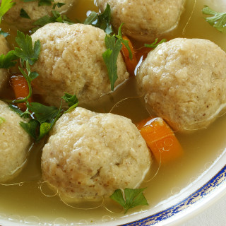

Matzo Ball Soup

Description
Matzo Ball Soup is a common dish in Jewish culture. It is a dish used in the Passover Sedar but it is often used for other holidays as well.
I just make it when it is cold and rainy outside.
Recently, my girlfriend asked what I would do if she didn't like Matzo Ball Soup (we make it often).
I had to inform her, I mostly only make it because she likes it. So, I guess if she didn't like it, we'd make something else
Ingredients
- Celery(3 sticks)
- Carrots (2 sticks
- Potatoe (1- Yukon/Golden)
- Olive Oil
- Salt, Pepper, Italian Seasoning, Cumin
- Onion (1/2)
- Chicken Consume (2.5 Tbs)
- Chicken (1lbs)
- Egg Noodles
- Maneshevits Matzo Balls
Steps
- Dice onion
- Slice carrots
- Cube potatoe
- Slice Celery
- Heat 2 tablespoons Olive Oil in big pot
- Sweat Carrots
- Cook Onion in oil until transparent
- Add 12 cups water to pot
- Once boiling add; potatoe, celery, chicken and carrots
- Once chicken is cooked (~8min), remove, shred,put back in
- Add consume + seasonings to taste
- Make Matzo Balls according to instructions and place in soup
- When there are 12 min. left to cook Matzo Balls, add Egg Noodles
Back To Home